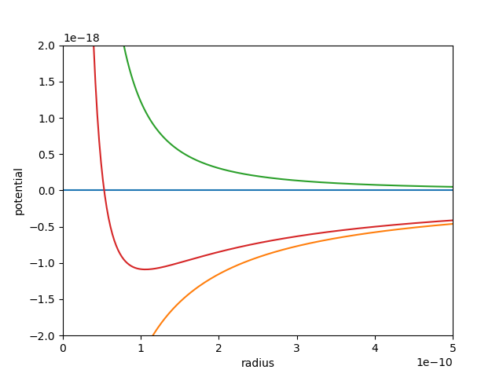

Hydrogen atom
Had a look at the document posted by Vinod G on the theory of Hydrogen atom. The graph of the potential is drawn by hand, still a common practice. What I thought is a graph plotted using proper equations could be more useful.
The python program potential.py gives the following output.

From the graph, we can see that the minimum value is around 1e-10 meter, double the value of Bohr radius. One can modify the code, by changing the value of angular momentum. It is important to range of radius to be plotted also.
Obtaining some numerical values of important parameters from equations and graphs, and comparing them with the documented values may make learning these things more meaningful and interesting.